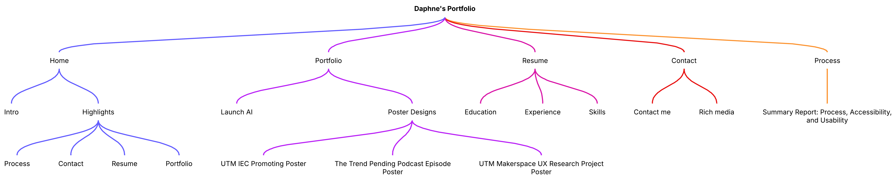
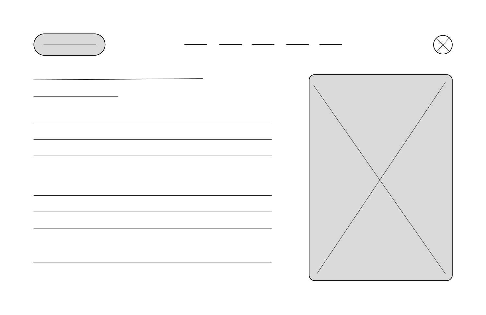

Summary Report: Process, Accessibility, and Usability
The development of my personal portfolio website followed a structured design process, combining planning and technical implementation. My goal was to create a professional, user-friendly digital product that effectively showcased my work, skills, and identity. I hoped to create a website that was both professional and creative, and most importantly, user-friendly.
Process and Planning
The project began with an initial planning phase, in which I defined the purpose of the website and identified the target audience, including potential employers, faculty, other students at the University of Toronto, and myself. I then created a basic sitemap to organize the five essential pages: Home, Portfolio, Resume, Contact, and Process. This helped establish a clear Information Architecture (IA) and ensured logical navigation throughout the website. Next, I developed a desktop interface sketch for the homepage to define the layout structure, content hierarchy, and user flow. The sketch focused on placing key elements such as the navigation bar, introduction, featured works, and footer in a visually balanced way. After finalizing the layout, I moved on to HTML structure programming for all pages, ensuring consistency in navigation and layout. Then, external CSS was applied to control styling, colors, image alignment, etc. The design process was iterative. I regularly tested the website on different browsers (Chrome and Safari) and refined layout, spacing, and compatibility issues. Feedback from several other students and self-assessment also guided improvements in both design and usability.
Visual Design and Media Use
A strong visual identity is established through consistent use of color, typography, and original media. I chose a minimalist color palette with beige as the primary background color combined with an accent color - black - to create a modern and professional look. This approach ensures visual consistency across all pages while maintaining readability.
The typography choices were made to enhance clarity and hierarchy. A simple "sans-serif" font is used for the main text to improve readability, while my name in the upper left corner of the screen uses a slightly bolder font for contrast and visual appeal. Additionally, I bolded the headings in the navigation bar to create emphasis, indicating that they are buttons to navigate to a new page with different content.
Original graphic elements and media play a crucial role in the website. I included a professional photo of myself on the homepage to create a personal connection with users. This photo was also carefully selected to match the website's color scheme and style. The Portfolio page features original images, project photos, and videos showcasing my work. All images and videos are original and created by me. A project demo video is also presented on the website to illustrate dynamic content and enhance interaction. On the Contact page, I added rich multimedia elements such as embedded maps and interactive elements to make the page more functional and visually appealing.
Usability and Accessibility
Usability was a key focus throughout the design process. A consistent navigation bar across all pages allows users to easily move between sections of the website. Content is organized in a clear hierarchy with headings, spacing, and alignment guiding the user's attention. I avoided clutter by maintaining a simple layout and limiting unnecessary visual elements.
Accessibility considerations were implemented according to WCAG 2.0 principles. All images have descriptive alt text to aid screen readers. Color contrast between text and background was carefully chosen to ensure readability for visually impaired users. Font sizes are easy to read and resizing, and the layout avoids overly complex structures that could confuse users.
Interactive elements such as links and buttons are clearly distinguished and easy to use. Forms on the Contact page include labels for each input field, improving accessibility and usability. Additionally, semantic HTML elements such as header, nav, main, and footer were used to improve document structure and compatibility with supporting technologies.
Overall, the website was designed to balance aesthetics and functionality. By combining thoughtful planning, consistent visual design, and an emphasis on usability and accessibility, the final product delivers a professional and user-centric digital experience.
Information Architecture (IA)

Desktop wireframe for the home page
